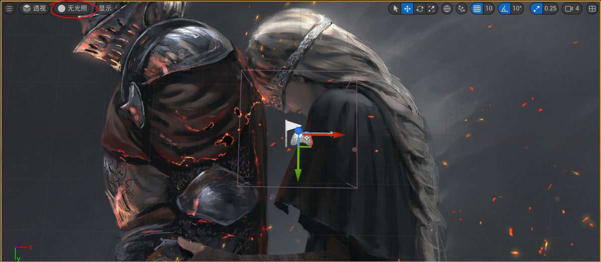
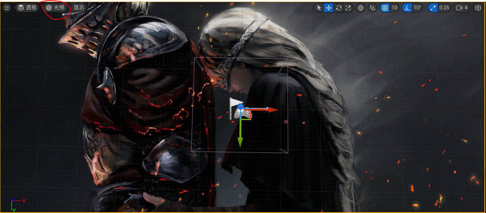
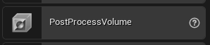
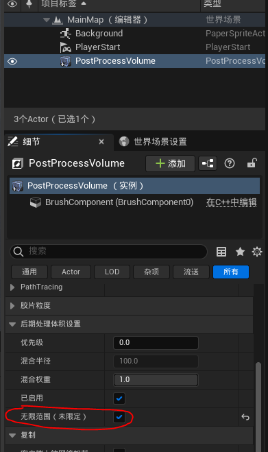
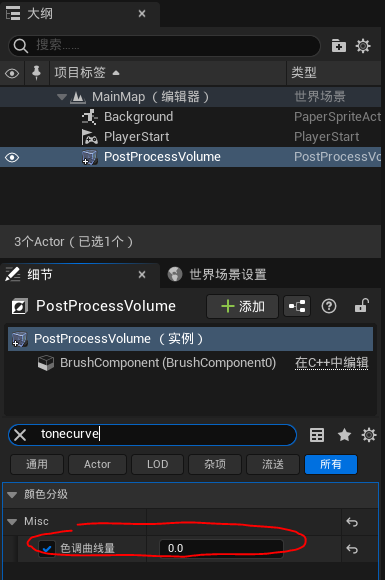

稍微有点熟悉 ue4 了，正好 ue5 正式版发布了，这两天尝试了下 ue5，不过遇到了导入的素材有色差的问题记录下解决的过程。
# 1. 色差问题
当导入素材，比如图片，在无光照视图下，场景中的显示是正常的：

但当在光照视图或是正常运行后，场景中图片显示就成了这样：

可以看到有很明显的色差，变暗了很多。
# 2. 解决方法
色差主要是因为 UE 自带后期处理效果，UE4 中可以使用控制台指令 r.TonemapperFilm 0 可以关闭这个效果，不过 UE5 中使用这个指令发现没有效果。
后来查阅了下资料，发现这个指令 UE5 中删除了（并不明白为什么删了），现在需要消除这个效果，可以在场景中拖一个 PostProcessVolume（主要用于后期处理的 Actor）：

然后将应用范围设为无限：

然后最重要的是将这个色调曲线量（Tone Curve Amount）勾上然后值设置为 0：

这样就没有色差啦～
# 3. 总结
这篇文章是 Qiita 上找到的，想吐槽下，UE 相关的资料和教程中文的确实太少了，官方的中文文档说实话很多问题也查不到，对新手有点不友好，很多时候想搜个东西去 Google 上都不知道怎么搜，对初学者还是挺不友好的，希望我学成之后看看能不能为虚幻中文社区贡献点力量吧 (●ﾟωﾟ●)
# 参考资料
- UE5 で削除された r.TonemapperFilm 0 の代替手法